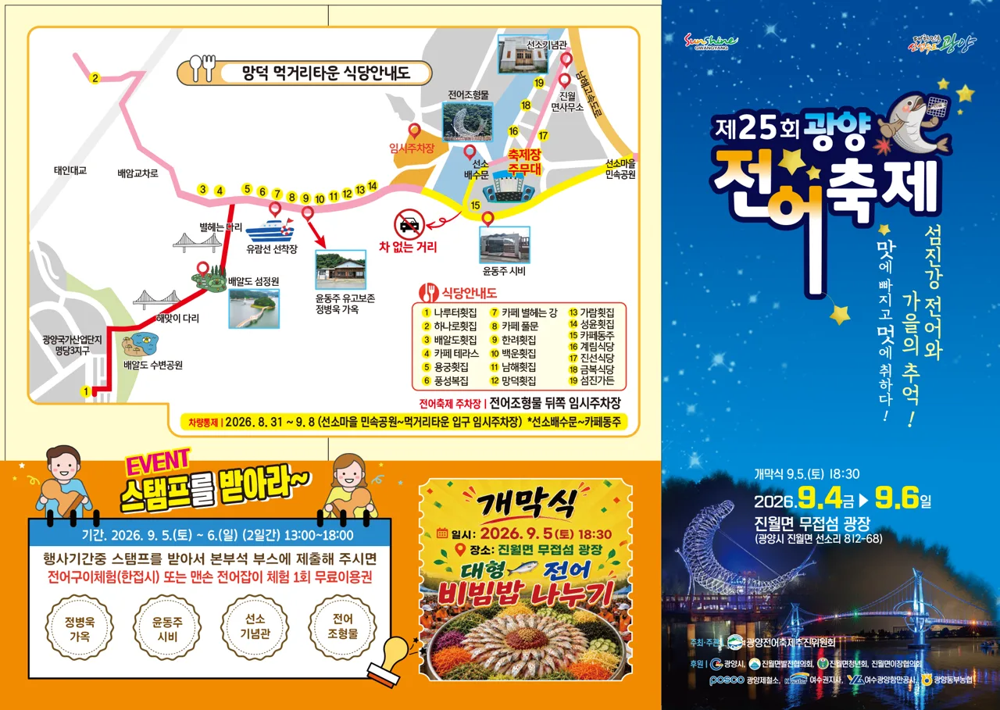
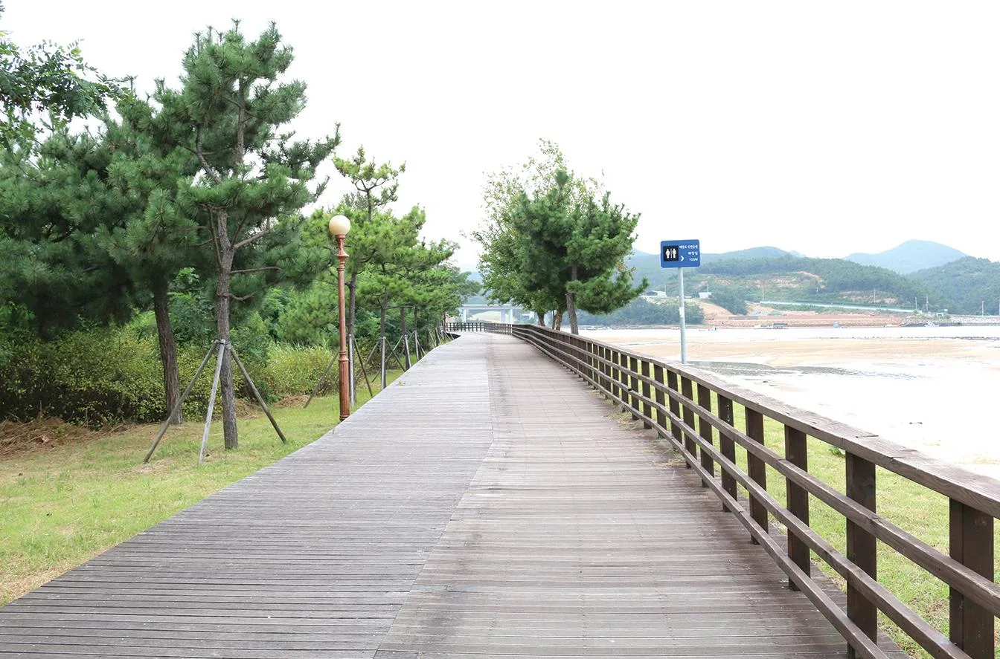
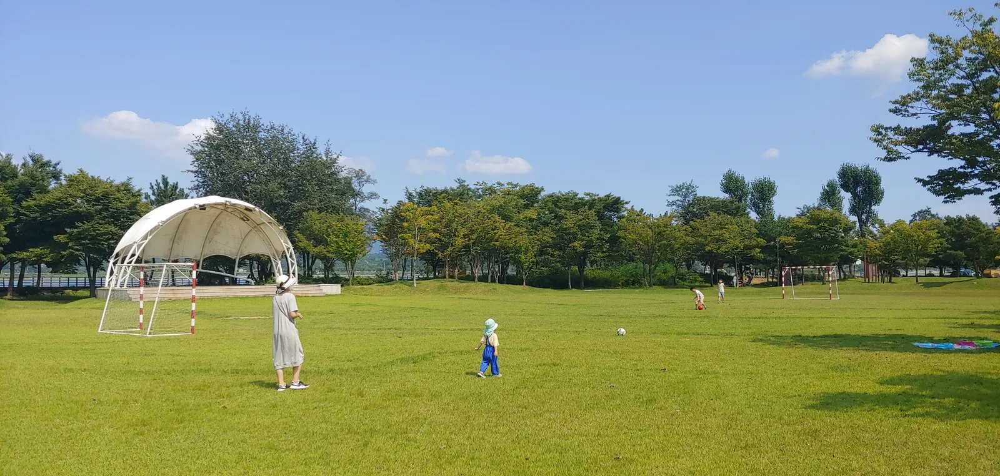

▲ 망덕포구 인근 배알도. 광양전어축제 행사장에서 차로 잠깐이면 닿는 연계 코스다 ⓒ 광양시청 공식

▲ 제25회 광양전어축제 공식 안내도. 임시주차장 위치와 배알도 수변공원, 정병욱 가옥 등 스탬프 투어 코스가 함께 표시돼 있다 ⓒ 광양시청 공식
제25회 광양전어축제가 2026년 9월 4일부터 6일까지 사흘간 광양시 진월면 망덕포구 무접섬 광장 일원에서 열렸다. '섬진강 전어와 가을의 추억, 맛에 빠지고 멋에 취하다!'를 주제로 제철 전어의 풍미와 섬진강·광양만의 풍경, 진월면의 역사·문화 자원을 함께 엮은 것이 특징이다. 축제는 이미 막을 내렸지만, 스탬프 투어 코스나 주차장 위치, 인근 연계 코스는 다음 방문을 준비하는 이들에게도 여전히 쓸모가 있다.
1. 무접섬 광장에서 사흘간
축제장인 무접섬 광장은 섬진강과 광양만이 만나는 망덕포구 초입에 자리한다. 첫날인 9월 4일에는 지역예술단체 공연과 전어가요제 예선이 열렸고, 9월 5일 개막식을 기점으로 축하공연과 체험 프로그램이 본격적으로 펼쳐졌다. 마지막 날인 9월 6일에는 전어가요제 본선과 시상식, 폐막식과 불꽃쇼로 사흘간의 일정이 마무리됐다.
| 날짜 | 주요 내용 |
|---|---|
| 9/4(금) | 지역예술단체 공연(16:00~18:00), 전어가요제 예선 및 축하공연(18:00~21:30) |
| 9/5(토) | 진월버꾸농악단 길놀이, 전어잡이소리 시연, 전어축제 개막식(18:30), 축하공연(19:30~21:30) |
| 9/6(일) | 주민자치·교육기관 댄스대회, 해상 전어잡이배 시연(섬진강 하구), 전어가요제 본선·시상식·폐막식·불꽃쇼 |
2. 전어잡기부터 전어 한 상까지

▲ 배알도 수변공원의 데크 산책로. 축제 기간 중 잠시 걸어보기 좋은 코스로도 꼽힌다 ⓒ 광양시청 공식
체험 프로그램의 중심은 단연 '맨손전어잡기'다. 1회 참여비 1만 원으로 유·초등부와 성인부로 나눠 하루 3회씩 진행됐고, 현장 상황에 따라 유동적으로 운영됐다. 여기에 전어구이체험, 정성으로 차린 '전어 한 상'(전어회·전어무침·전어구이) 시식, "전어 손질? 전어렵지 않아요!"를 내세운 라이브 쿠킹쇼까지 더해져 전어를 맛보고 직접 손질하는 법까지 배울 수 있는 구성이었다. 전남 무형유산 제57호로 지정된 '진월전어잡이소리'도 9월 5·6일 양일 시연됐으며, 섬진강 하구에서는 해상 전어잡이배 시연도 함께 이뤄졌다.
3. 상금 100만 원 — 전어가요제
부대 행사 중 눈에 띄는 것은 상금 100만 원이 걸린 '전어가요제'다. 7월 16일부터 8월 14일까지 참가 신청을 받았고, 9월 4일 예선에서 본선 진출 12개 팀을 가린 뒤 9월 6일 본선 무대에서 최종 순위를 정했다. 대상 100만 원(농촌사랑상품권), 최우수상 50만 원, 우수상 30만 원, 인기상 20만 원이 걸려 있었다. 초대가수로는 미스트롯4 신현지, '장구의 신' 박서진 등이 무대에 올랐다.
4. 스탬프 찍고 전어 공짜로 — 진월 명소 탐방
축제 측은 정병욱 가옥, 윤동주 시비, 전어조형물 등 진월면 명소를 도는 '스탬프 투어'도 함께 운영했다. 9월 5~6일 이틀간 13:00~18:00에 스탬프를 모아 본부석 부스에 제출하면 전어구이체험(한 접시) 또는 맨손전어잡기체험 1회 무료이용권을 받을 수 있었다. 정병욱 가옥은 시인 윤동주의 유고를 보존한 곳으로 알려져 있어, 전어 축제라는 이름과 달리 걸으면서 지역의 문학·역사 이야기까지 함께 접할 수 있는 코스였다.
5. 주차 — 전어조형물 뒤쪽 임시주차장

▲ 배알도 수변공원 잔디광장. 축제 기간 캠핑을 겸해 방문하는 가족 단위 방문객도 눈에 띄었다 ⓒ 광양시청 공식
공식 안내도에 따르면 주차는 축제장 입구 전어조형물 뒤쪽 임시주차장과 (구)진월초등학교 뒤편 공용주차장을 이용하면 된다. 다만 8월 31일부터 9월 8일까지 선소마을 민속공원~먹거리타운 입구 구간에 차량이 통제됐고, 선소배수문~카페동주 구간은 '차 없는 거리'로 지정돼 도보로만 이동할 수 있었다. 광양 진월IC에서 국도 2호선을 타면 차량으로 약 5분 만에 행사장 인근에 닿는다.
광양시 문화관광 홈페이지에서 확인 가능6. 축제장 밖, 배알도로 이어지는 코스
망덕포구 일대에는 축제장 밖에서도 둘러볼 만한 곳이 여럿이다. 배알도 수변공원과 배알도 섬정원은 소나무 숲과 갯벌, 데크 산책로가 어우러진 곳으로 가족 단위 나들이객에게 인기가 많다. 윤동주 시인을 기리는 '별빛나길' 데크로드, 짚와이어 체험이 가능한 '섬진강별빛스카이', 섬진강 요트투어까지 더하면 반나절 코스로 충분히 이어진다. 코리아둘레길 남파랑길과 섬진강 자전거길도 이 일대를 지난다.
7. 정리
체크포인트
- 2026년 광양전어축제는 9월 4~6일 망덕포구 무접섬 광장에서 열렸다.
- 주차는 전어조형물 뒤쪽 임시주차장 또는 (구)진월초등학교 뒤편 공용주차장을 이용한다.
- 스탬프 투어로 명소를 돌면 전어구이체험이나 맨손전어잡기체험 무료이용권을 받을 수 있었다.
- 축제장 인근 배알도 수변공원 등을 엮으면 반나절 코스로 넉넉하다.
- 다음 회차 일정·프로그램은 광양시 문화관광 공식 채널에서 재확인하는 것이 정확하다.
문의는 광양시청 관광과(061-797-2721) 또는 진월면사무소(061-797-4264)로 하면 된다.